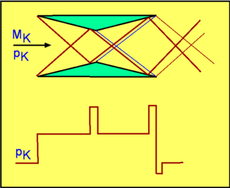

Shock-Expansion Techniques for Aerofoils
The general solution for two-dimensional supersonic flow can be thought of as a combination of uniform flow, shocks and expansion waves. Methods for solving normal, oblique shocks and expansion waves were developed in the previous sections and can be used to solve supersonic aerofoil flow. This is called Shock-Expansion Technique. It employs shock relations where there is a shock and Prandtl-Meyer expansion relations where there is an expansion and flow inbetween is assumed ot be uniform.
Flat Plate Aerofoil
Figure 43: Flat Plate Aerofoil at zero angle of attack
Consider a thin flat plate placed in a supersonic stream as shown in Fig. 43. For a zero angle of attack, there is no flow turning anywhere on the flat plate. Consequently the pressure is uniform on both upper and lower surfaces. Drag and lift are both zero. (Note : this method ignores friction losses).
If the flat plate is at an angle of attack equal to $α$, then a presure difference is set up between upper and lower surface of the plate. (Fig. 44.)
Figure 44: Flat Plate Aerofoil at an angle of attack
The flows sees the leading edge on the upper surface as a convex corner. A Prandtl-Meyer expansion results. At the trailing edge the flow is compressed through a shock back to the horizontal stream direction. At the leading edge on the lower surface is a shock since it forms a concave corner. The flow leaves the trailing edge through an expansion fan. A close look at the flow just after the trailing edge shows that there are two streams of gas - one, processed by expansion and shock on the upper surface and the other, gas processed by similar features on the pressure side. The two shocks are not of the same strength. Consequently the gas streams are of different densities and temperatures. However, the pressures and flow angles are equalised at the trailing edge. This gives rise to a slip stream at the trailing edge. From the pressure distribution shown, lift and drag can be calculated as
$$L=(P_{lower}-P_{upper})c\cos(α)\text" , "D=(P_{lower}-P_{upper})c\sin(α)$$
where $c$ is the chord. Note that this drag is not produced by viscosity as with incompressible or subsonic flows. It is brought about by the waves (shock and expansion) which are unique to supersonic flows. This is an example of Supersonic Wave Drag. Again viscous, surface friction effects have been ignored.
Lift and Drag can be expressed as coefficients, $C_L$ and $C_D$. These are obtained by non-dimensionalising the corresponding forces with the term $1/2 ρ_∞U_∞^2A$ , where $A$ is the area over which lift or drag force acts. This can also be written as $1/2 γP_∞M_∞^2$.
Consequently,
$$C_L=(Cp_{lower}-Cp_{upper})\cos(α)\text" , "C_D=(Cp_{lower}-Cp_{upper})\sin(α)$$
where $Cp_{lower}$ and $Cp_{upper}$ are the pressure coefficients on lower and upper surfaces.
Diamond Aerofoil
Figure 45 : Flow about a Diamond Aerofoil
Consider a typical aerofoil for a supersonic flow i.e., a Diamond Aerofoil as shown in Fig. 45. A flow at zero angle of attack produces the features as shown. At the leading edge there is a shock on each of the sides. Then at maximum thickness there are expansion waves. The flow leaves the trailing edge through another shock system.
The flow is symmetrical about the aerofoil centerline and lift is zero. But there is a drag which is given by,
$$D=(P_1-P_2)c \sin(δ_w)$$
It is possible to generalise this aerofoil result and develop a formula for drag and lift. If the aerofoil has a half wedge angle of $δ_w$ and $θ$ is the orientation of any side of the aerofoil, then the pressures on each of the sides can now be summed to determine lift and drag coefficients as follows -
$$C_L={∑P\cos(θ)1/2 c/{\cos(δ_w)}}/{γ/2P_∞M_∞^2 c$$
In terms of Cp for each side,
$$C_L={∑Cp \cos(θ)}/{2\cos(δ_w)}$$
Similarly for drag,
$$C_D={∑P \sin(θ)(1/2 c/{\cos(δ_w)})}/{γ/2 P_∞M_∞^2 c}$$
In terms of Cp for each side,
$$C_D={∑Cp \sin(θ)}/{2\cos(δ_w)}$$
Interaction between shocks and expansion waves
In the case of the diamond aerofoil, interactions can take place between shocks and expansion in the far field flow. In general, these have insignificant effect on the surface pressures and a complete analysis of the complete flowfield is not required to obtain a result. The flow interactions are shown in Fig. 46.
Figure 46 : Interaction between Expansion Waves and Shock.
Thin Aerofoil Theory
The Shock-Expansion technique is accurate, however, it requires individual summation of surface components and hence and is thus a complex numerical process. A closed form solution can be found if the aerofoils are considered thin and only weak oblique wave shocks are considered. This is the Supersonic Thin Aerofoil Theory. It is assumed the flow is deflected only slightly from the freestream direction as it passes over the aerofoil. Consequently as the shocks belong to the weak shock category, then the pressure change anywhere in the flow is given by,
$${ΔP}/P≈{γM^2}/√{M^2-1} Δ θ$$
It is assumed that pressure, $P$ is not far from $P_∞$ and the local Mach Number on the aerofoil is not far from $M_∞$ making the above equation, reduce to
$${ΔP}/P_∞≈{γM_∞^2}/√{M_∞^2-1} Δ θ$$
Referring all pressures to $P_∞$ and flow direction to that of the freestream,
$${P-P_∞}/P_∞={γM_∞^2}/√{M_∞^2-1} θ$$
This gives,
$$\table Cp, =, {P-P_∞}/{γ/2 P_∞ M_∞^2}; , =, 2/{γM_∞^2} {γM_∞^2}/√{M_∞^2-1} θ ; , =, {2θ}/√{M_∞^2-1}$$
Thus we have a simple expression for calculating $Cp$ on any surface placed in the flow. The interesting feature is that $Cp$ depends upon the local flow inclination $θ$ regardless of what feature caused the flow turning.
Flow about a Flat Plate Aerofoil at an Angle of Attack
Consider the Flat Plate Aerofoil previously treated above. The flow is inclined at an angle $α$ on both the surfaces. Accordingly,
$$Cp_{upper}=-{2α}/√{M_∞^2-1}\text" and "Cp_{lower}=+{2α}/√{M_∞^2-1}$$
The lift and drag coefficients are given by,
$$C_L=(Cp_{lower}-Cp_{upper}) \cos(α)\text" and "C_D=(Cp_{lower}-Cp_{upper}) \sin(α)$$
Substituting for $Cp$ and noting that for small $α$ , $\cos(α)=1$, then
$$C_L= {4α}/√{M_∞^2-1}\text" and "C_D={4α^2}/√{M_∞^2-1}$$
Supersonic flow over a 2-D wedge is shown in the following software : Super2d.exe (MS windows executable).
Diamond Aerofoil
For the diamond aerofoil, for the flow behind the shock,
$$Cp_1=Cp_3= +{2δ_w}/√{M_∞^2-1}$$
For the flow behind the expansion waves,
$$Cp_2=Cp_4= -{2δ_w}/√{M_∞^2-1}$$
While using this equation a positive sign is used for compression and a negative one for expansion. The drag coefficient is given by,
$$C_D={4δ_w^2}/√{M_∞^2-1}$$
which can be written as
$$C_D=4/√{M_∞^2-1}(t/c)^2$$
An Arbitrary Aerofoil
Figure 47: Flow about an Arbitrary Aerofoil.
A general aerofoil placed in a supersonic flow Fig. 47, can be considered as being the linear superposition of a flat plate at angle $α$, a flow deflection due to camber, $α_c(x)$, and a flow deflection due to thickness, $h(x)$. For this case,
$$C_L={4α}/√{M_∞^2-1}$$
$$C_D=4/√{M_∞^2-1}[{({dh}/{dx})^2}↖{\_}+α^2 + ({α_c}↖{\_})^2]$$
where ${({dh}/{dx})}↖{\_}$ and ${α_c}↖{\_}$ are average properties for the section.
Second Order Theory
The approximate theory shown above is of first order in that it retains only the first significant term involving $θ$ in an expansion for $Cp$. As a more accurate alternate, Busemann has provided a second order theory which includes $θ^2$ terms as well. As per this theory,
$$Cp={2θ}/√{M_∞^2-1}+[{(γ+1)M_∞^4-4M_∞^2+4}/{2(M_∞^2-1)^2}]θ^2$$
which is also written as
$$Cp=C_1θ+C_2θ^2$$
Again for this equation, a positive sign is used for $θ$ if the flow is undergoing compression and a negative one is used for expansion.
Note that the coefficients $C_1$ and $C_2$ are functions of Mach Number and $γ$ only.
There are thus three methods to calculate pressure in a turning supersonic flow. Of these Shock-Expansion technique is the most accurate. The remaining two are appropriate for for small flow angle changes only. The Busemann's method being the more accurate.
Reduction of Drag by cancelling the Waves
In supersonic flow waves are the main source of drag. Drag may be reduced by "removing" the waves from the system. For the example of a shock impinging on a solid wall, this produces a reflected shock. The latter occurs in order to turn the flow to be parallel to the wall. If the wall itself, at the point (0), was turned through an angle $θ$ (Fig. 48), then the flow follows the wall and there is no need for a reflected shock. This phenomenon can also be interpreted as saying that an expansion wave is produced at (0) that cancels the reflected shock. Now the system is free of waves and so free of wave drag.
Figure 48: Cancellation of Waves.
A clever device built on the idea of wave cancellation is the Busemann Biplane (Fig. 49). The geometry and incoming Mach Number are so arranged that a perfectly symmetrical system of shocks is produced and at the exit there are no waves whatever. This in theory, gives a zero wave drag. If the Busemann plane is run under off-design conditions as in Fig. 50, the exit flow is not wave-free. There is a resulting wave drag.
Figure 49: Busemann Biplane under design conditions

Figure 50: Busemann Biplane under off-design conditions